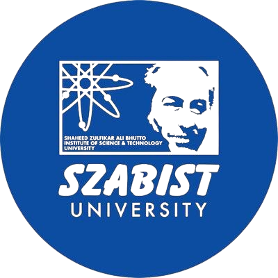

Profile
AboutHassan Asghar is a Ph.D. researcher at KENTECH with research interests in high-performance computing, big data analytics, cloud computing, and network and protocol security. He received an M.S. in Computer Science from COMSATS University Islamabad, Abbottabad Campus, and a B.S. in Computer Science from SZABIST, Islamabad Campus. His work combines research-driven problem formulation with hands-on systems experience in benchmarking, performance analysis, and security testing.
Research Focus
InterestsNetwork & Protocol Security
Security testing, protocol analysis, and automated extraction of security properties from specifications.
High-Performance Computing
Benchmarking, profiling, I/O performance, and practical optimization for large-scale systems.
Cloud & Edge Systems
Scheduling, resource management, reliability, and performance-aware distributed computing.
Big Data Analytics
Scalable data processing, distributed platforms, and empirical evaluation of system behavior.
Education
Academic training-
Ph.D. in progress
KENTECH, Naju-si, South Korea -
M.S. in Computer Science, 2018
COMSATS University Islamabad, Abbottabad Campus, Pakistan -

B.S. in Computer Science, 2014
SZABIST, Islamabad Campus, Pakistan
Publications
Selected work-
Poster: Automated Security Property Extraction from Protocol Specifications IEEE ICNP 2025, 33rd International Conference on Network Protocols, Oct. 13, 2025IEEE ICNPPoster
-
A Survey on Scheduling Techniques in the Edge Cloud: Issues, Challenges and Future Directions arXiv preprint arXiv:2202.07799, submitted Feb. 16, 2022
-
Comparative analysis of task level heuristic scheduling algorithms in cloud computing The Journal of Supercomputing, vol. 78, pp. 12931–12949, Mar. 12, 2022
-
Analysis and implementation of reactive fault tolerance techniques in Hadoop: a comparative study The Journal of Supercomputing, vol. 77, no. 7, pp. 7184–7210, 2021
-
Systematic Benchmarking/Profiling Approaches to Improve I/O Performance of GloSea ICGHIT 2022, 10th International Conference on Green and Human Information Technology, oral, Jan. 2022